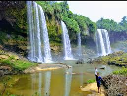
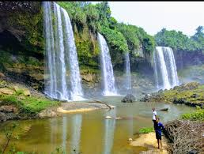
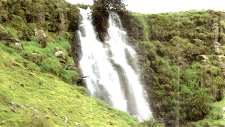
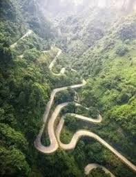
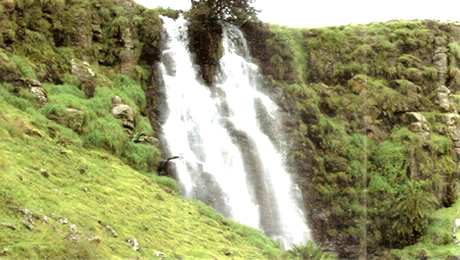
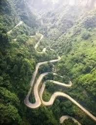

Mambilla Plateau
Tales About the untapped "goldmine" in Nigeria
The Mambilla Plateau is a high grassland plateau with an average elevation of about 1,524 metres (5,000 ft) above sea level, making it the highest plateau in Nigeria.
The plateau which has an undulating landscape free of insects, also has temperate climate within a tropical region.
It houses the Chappal Waddi mountain considered as the highest point in Nigeria and probably in West Africa with an average height of about 2,419 metres (7,936 ft) above sea level.
As soon as one reaches the top of the mountain, the hot weather witnessed at the foot of the mountain disappears and you will be greeted by fresh and very chilled breeze blowing across the plateau.
Situated in Sardauna Local Government Area of Taraba State, The Mambilla Plateau can be described as a goldmine, which remains largely untapped.
From the lush vegetation that is reflected in the large trunk of fruit trees and cash crops produced to the endless natural resources,
the Plateau and its inhabitants however have little or nothing to show for this seeming abundance in natural resources for decades.
The Mambilla Plateau in Nigeria has deposits of the following:
- Bauxite: The Mambilla Plateau has widespread deposits of bauxite, which is formed from the chemical weathering of trachyte. The bauxite is made up of gibbsite, goethite, hematite, kaolinite, and quartz.
The bauxite in the Mambilla Plateau is characterized by enriched Al2O3, erratic amounts of SiO2, and Fe2O3. - Blue sapphires: A Nigerian company, Gendutse Investment, acquired the mining license for a blue sapphire deposit on the Mambilla Plateau. The deposit is located about 10 kilometers north of Guroji village.
 

 


